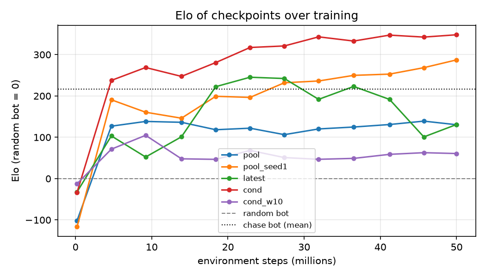
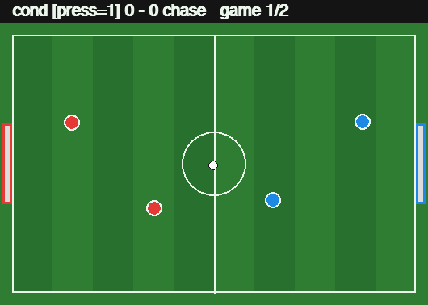
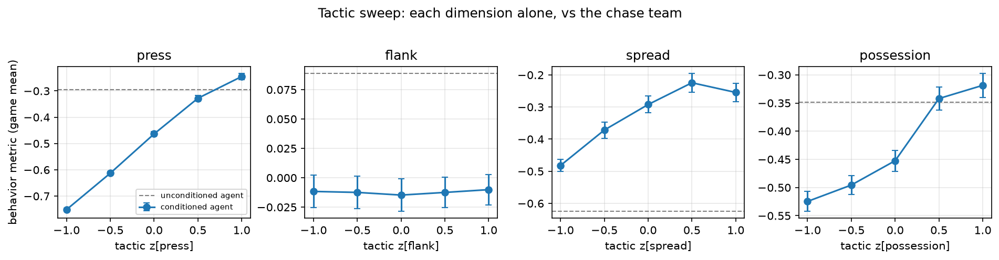

You are red and attack to the right. First to 5 goals wins.
Or press Space.
Goal
Loading the agents…
Controls
WASD
↑←↓→
Space to kick
Move with W A S D or the arrow keys. Press Space to kick.
Move with either set of keys. Press two at once to go diagonal. P pauses; on touch screens, tap the keys above.
Agent's next move
How likely the blue agent is to pick each direction this instant, as it sees the pitch from its own side.
Kick
Confidence
This opponent follows fixed rules, so there are no learned odds to show. Pick one of the trained agents to see them.
Coach your teammate
Your red teammate was trained to follow a tactic. Pick one, or type your own. Common football phrases are matched directly; anything else goes to a small language model running on your own computer.
How the agent learned
The game is a small top-down physics simulation: two round players, a ball with friction, walls that bounce, and a goal at each end. A player chooses one of 18 actions every step: stay or move in one of 8 directions, each with or without a kick.
It sees16 numbers: where both players and the ball are, and how fast they move, from its own side. The pitch is mirrored so it always attacks to the right.
It thinksA small neural network with two layers of 128 units.
It weighs18 probabilities, one for each action. This is what the panel beside the pitch shows.
It actsOne action is drawn from those odds, 30 times a second.
It learned with PPO on 64 games at once on a laptop CPU, and only ever played copies of itself. To keep it from forgetting old tricks, half of the games in each batch were against snapshots from a pool of its own past versions. Early on, a small bonus for moving toward the ball and pushing it toward the opponent's goal helped it get started. That bonus faded to zero halfway through training, so the last half was learned from goals alone.
The physics you play here is a line-by-line JavaScript port of the Python training environment, checked step for step by a test. The network runs in your browser.
What training showed
The midterm, in 1v1: four runs of 30M steps each, about 16 minutes apiece on an M5 MacBook Air: the main setup with two seeds, a run with goal rewards only, and a run that played only its latest copy.
Past opponents keep the agent improving
With a pool of old versions to play, Elo rose steadily to about +300 over a random player. Playing only the latest copy peaked near 5.7M steps, then the two copies settled into a 0–0 standoff and the agent fell behind the scripted bot.
Elo of checkpoints over training, fitted from round-robin cross-play. The random bot is 0.
Later checkpoints beat earlier ones
In the pool runs, a later checkpoint beat an earlier one in 83–89% of pairings. Blue below the diagonal means the newer agent won.
Cross-play score between checkpoints of the final agent's run (win 1, draw 0.5).
Reward shaping mostly speeds up the start
The run with goal rewards only was behind early on and caught up by about 8M steps. It finished level with the shaped runs.
Win rate against the scripted bots, self-play draw rate, and policy entropy.
Final agents against the bots
1000 games each, sides alternating. Bars show wins, draws and losses.
Agent
Against a random player
Against the chase bot
Pool self-play, seed 1The Pro agent
70 W, 28 D, 2 L
80 W, 7 D, 14 L
Pool self-play, seed 0
47 W, 51 D, 2 L
71 W, 6 D, 23 L
Goal rewards only
46 W, 53 D, 1 L
86 W, 3 D, 12 L
Latest copy onlyThe Naive agent
3 W, 95 D, 2 L
14 W, 7 D, 79 L
The final agent (red) against the scripted chase bot.
2v2 with a coachable teammate
The final project. One network controls both players of a team, and one version also takes a four-number tactic: press, flank, spread and possession. Five runs of 50M steps each.
The pool still helps, but seeds disagree
One pool run reached +287 Elo over a random team. The same setup with another seed stalled at +130, with 91% of its self-play games drawn. Playing only the latest copy peaked at +245 near 23M steps, and from 42.3M steps on every self-play game was a 0–0 draw. The tactic-conditioned team ended strongest, at +348.

Elo of 2v2 checkpoints over training, fitted from round-robin cross-play. The random team is 0.
The teammate follows three of four tactics
Told to press, it plays higher up the pitch and wins more: 24% of games against the chase team at press −1, 54% at +1. Spread and possession move less but clearly. Left or right wing has no effect. With ten times the tactic reward, the team follows all four, but wins at most 12% against the chase team.

The conditioned team (red) told to press high, against the scripted chase team.

Each tactic value set alone from −1 to 1, 500 games per setting against the chase team. The dashed line is the team trained without tactics.
Final 2v2 teams against the bots
1000 games each, sides alternating. Bars show wins, draws and losses.
Team
Against a random team
Against the chase team
Tactic-conditionedYour teammate in 2v2
77 W, 23 D, 0 L
40 W, 56 D, 4 L
Pool self-play, seed 1The Pro team
65 W, 28 D, 6 L
58 W, 19 D, 23 L
Pool self-play, seed 0
24 W, 75 D, 1 L
35 W, 50 D, 15 L
Latest copy only
8 W, 91 D, 2 L
13 W, 18 D, 68 L
Tactic-conditioned, 10× tactic reward
32 W, 59 D, 8 L
9 W, 11 D, 80 L
The teams pass very little: the best one completes about one pass per game, and both players often chase the ball together. The coach reads 92.7% of tactic values correctly on 24 held-out phrases by trying keywords first and asking qwen2.5 3B only when they find nothing, against 88.5% for keywords alone and 79.2% for the model alone. I picked that setup after seeing the test errors, so the number is optimistic.